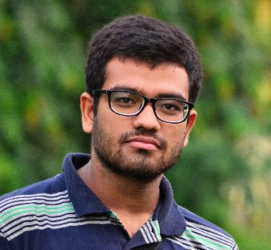

About me
A Small Introduction About Me

Work Experience
present
Indian Institute of Technology, Kharagpur
Supervisor: Dr. Abhijit Mukherjee , Dr. Aditya Bandopadhyay
Topic: Effect of changes in seawater head on seawater-groundwater Interaction. [Masters' Thesis]
- Numerical modeling of groundwater flow due to diurnal and seasonal head variation both for both the pre andpost monsoon period, considering matrix compression and rebound..
- Travel time distributions of the flow-field by modeling in OpenFOAM and cross verification from field data.
April, 2021
TSAI Lab, Univeristy of Alberta
Supervisor: Dr. Peichun Amy Tsai, Canada Research Chair in Fluids and Interfaces
Topic: Supercritical CO2 pushing brine in microfluidics: salt precipitation process:
- Simulation of mass-transfer and phase change across immiscible interfaces between supercritical CO2 using VOF in OpenFOAM in a T-Junction micofluidic channel to simulate CO2 injection during CCS.;
- Investigation of different droplet formation pressure regimes in a T-junction microchannel.;
July, 2020
METIS Laboratory, Sorbonne University
Supervisor: Dr. Damien Jougnot, Physical Hydrogeology Group, CNRS UMR-7619
Topic: Numerical study of Rayleigh Taylor instabilities in porous media with geoelectrics.[Report].
-Programmed a coupled code in OpenFOAM to carry out the Rayleigh Taylor Instability in a porous media.
-Effective conductivity calculation by simulating current injection through it as the instability evolves.
-Performed anisotropic analysis with the change in mixing length to get an inverse formulation..
July, 2019
Geosciences Rennes, Universite de Rennes1
Supervisor: Dr. Yves Meheust, Team DIMENV, CNRS UMR-6118
Topic: Numerical simulations and Experimental study of CO2sequestration in deep aquifers. [Report].
- Designed and performed a 3D-experiment for laser scanning of gravitational instability (Rayleigh Taylor instability) of miscible fluids in a porous media.
- Studied the vaiation of onset time and mixing length in pore scale of Rayleigh Taylor Instability.
- Programmed a new solver in OpenFOAM to simulate the Rayleigh Taylor Instability with dispersion fortwo miscible fluids in porous media in both Darcy and pore scale.
May, 2019
Indian Institute of Technology, Kharagpur
Supervisor: Dr. Saibal Gupta, Dept. of Geology and Geophysics
Topic: Thermal transport in connected aquifers
- Determination of mixing rate considering reactive transport of some specific elements responsible asradiogenic heat source.
- Numerical modeling of couped thermal and concentration transport in porous media.
Education
Always Stay Fool and Keep Learning
Till Now
5-Yr Integrated Bachelors and Masters
Indian Institute of Technology, Kharagpur
Major in Exploration Geophysics, GPA: 8.35/10.0 (Class-rank: 3)
Micro-Specialization in Micro-fluidics and Nano-patterning
Related Courses: Electrical methods of Prospecting, Gravity and Magnetic Methods of Prospecting, Electromagnetic methods of prospecting,Nuclear Geophysics, Borehole Geophysics, Geophysical Signal Processing, Geophysical Inverse Theory;Other subjects and MOOCs:Fluid Mechanics, Computational Fluid Dynamics(Prof. Sreenivas Jayanti, IIT Madras), Programming and Data Structures(C language), Multi-variate Calculus, Transform Calculus, Partial Differential Equations, Linear Algebra, Earth Imageryusing ArcGIS(MOOC, ESRI).
2015
Higher Secondary
Nava Nalanda High School, Kolkata
Those twelve years is the most awesome period of time in my student life. Learnt my basics, got interested in mathematics and physics which brought me to what I am pursuing today. Made some great friends with I am still in contact with. Learnt from some great teachers. Thanks to all of you, very very much!